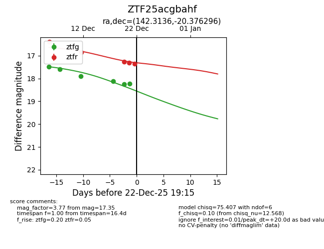
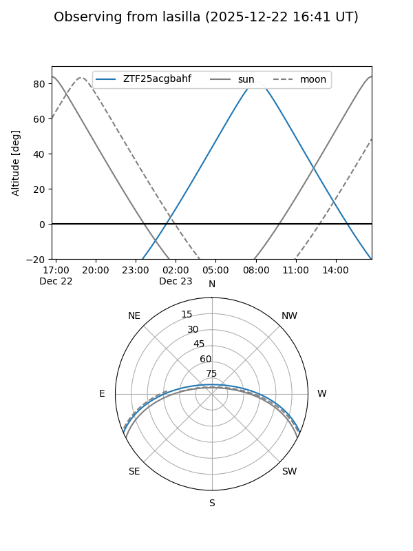
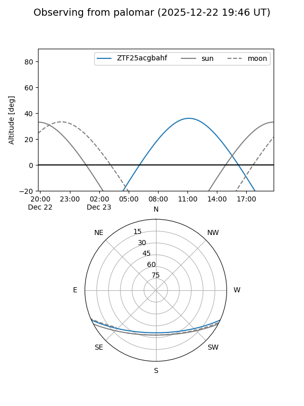
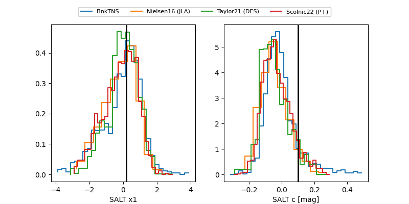

ZTF25acgbahf
Target ZTF25acgbahf at 2025-12-21 10:52
Aliases and brokers:
FINK: fink-portal.org/ZTF25acgbahf
Lasair: lasair-ztf.lsst.ac.uk/objects/ZTF25acgbahf
ALeRCE: alerce.online/object/ZTF25acgbahf
alt names
ZTF25acgbahf (ztf,fink_ztf)
Coordinates:
equatorial (ra, dec) = 142.3136,-20.37631
equatorial (HMS+DMS) = 09:29:15.26,-20:22:34.73
galactic (l, b) = (251.7100,+21.80178)
Flags:
Photometry:
last atlasc=17.69, atlaso=16.92, ztfg=18.26, ztfr=17.31
7 atlasc, 14 atlaso, 5 ztfg, 4 ztfr detections
Lightcurve

Visibility


Additional plots
